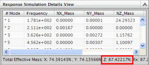

从响应仿真查看模态
 仿真导航器
仿真导航器
-
 正则模态[38](位于 Response Simulation 1节点下方)
正则模态[38](位于 Response Simulation 1节点下方) 注释
注意到 MEFFMASS 阈值已经将您请求的60个模态中的22个滤出。
-
响应仿真细节视图
个面板中显示了在动态响应解算方案中求解出的各个正则模态的动态特性(频率、质量、阻尼以及刚度)。

通常来说，您想让施加力方向上的合计有效质量为80%或更高，在这个模型中，您只在 Z 向上施加了载荷，而 Z 向上的合计有效质量大约为87%。
提示
如果您想包含更多质量，请使用下列选项之一或者全部来重新进行正则模态解算：
-
请求软件计算更多模态
-
减小 MEFFMASS 阈值，以使软件保留更多的模态以用于响应仿真
对于这个练习，您不需要重新进行解算。
-